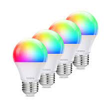

Krajem 19. veka struja je postaja sve dostupnija ljudima i to je prirodno podstaklo razvoj sijalica kao sredstva da se osvetle prostorije u mraku. Sijalice su prosti uređaji i imaju samo jedan cilj – da proizvedu veštačku svetlost. U poslednje vreme razvile su se LED sijalice, koje su mnogo efikasnije od običnih sijalica. Međutim, razvoj digitalnih tehnologija omogućio je da se LED sijalice još više razviju. Pametne sijalice su sijalice koje u sebi sadrže digitalne čipove koji im omogućavaju povezivanje na internet. Njihove mogućnosti olakšavaju ljudima mnoge aktivnosti.
Pametne sijalice imaju WiFi priključak, što im omogućava povezivanje na mrežu, odnosno internet. Na taj način, moguće je upravljati sijalicom preko aplikacije na nekom uređaju (telefon, računar, tablet...). Neke pametne sijalice koriste Bluetooth za povezivanje sa uređajima, mada je ova tehnologija stara i ima gore mogućnosti od WiFi-a. Mogućnosti pametnih sijalica su mnogo različite. Neke od glavnih mogućnosti su:
Ručno podešavanje svetlosti – umesto dva stanja, uključeno i isključeno, kod pametnih sijalica moguće je ručno podestiti procenat osvetljenosti koji želimo. Dakle, možemo tačno namestiti koliko želimo da neka sijalica svetli, umesto da imamo dva poprilično različita stanja.
Menjanje boje – za razliku od običnih sijalica koje mogu da svetle samo u jednoj boji (uglavnom je to žuta ili bela, mada se mogu naći i sijalice koje svetle npr. crvenom bojom), pametne sijalice nemaju takvo ograničenje, već mogu svetliti u velikom broju različitih boja. Boja kojom sijalica svetli se, naravno, podešava preko aplikacije koja je napravljena za korišćenje te sijalice.
Samoisključivanje/samouključivanje – pametne sijalice mogu da se programiranju tako da se uključuju i isključuju u tačno određeno vreme. Na taj način, ne moramo da brinemo da li smo upalili svetlo ispred kuće uveče ili da li smo ugasili svetlo u sobi kada smo izašli iz stana. Takođe, možemo namestiti da nam se sijalice upale ujutru kako bi smo lakše ustali.
Puštanje muzike - neke od pametnih sijalica imaju u sebi ugrađene male zvučnike koji omogućavaju reprodukovanje zvučnog sadržaja.
Međutim, daleko najveća prednost pametnih sijalica jeste daljinska kontrola. Gore navedene komande moguće je izvršavati preko aplikacije na nekom mobilnom uređaju dok je kod nekih sijalica komande moguće izvršavati i glasovno. Kontrola sijalica preko mobilnog uređaja omogućava nam da i ako nismo kod kuće, možemo uraditi šta je potrebno. Ovakva kontrola je deo šireg sistema koji se zove „Smart house“ odnosno pametna kuća. Taj sistem čini niz pametnih uređaja (sijalice, šporeti, veš mašine, itd…) pomoću kojih možemo kontrolisati stanje u kući iako se nalazimo daleko od nje.
Možda prednosti samih pametnih sijalica ne deluju toliko privlačne, ali kada se one integrišu u ceo sistem „pametne kuće“ to deluje mnogo praktičnije. Smatram da su ovakvi sistemi jako korisni i praktični za upotrebu i pretpostavljam da će se u budućnosti sve više implementirati.
